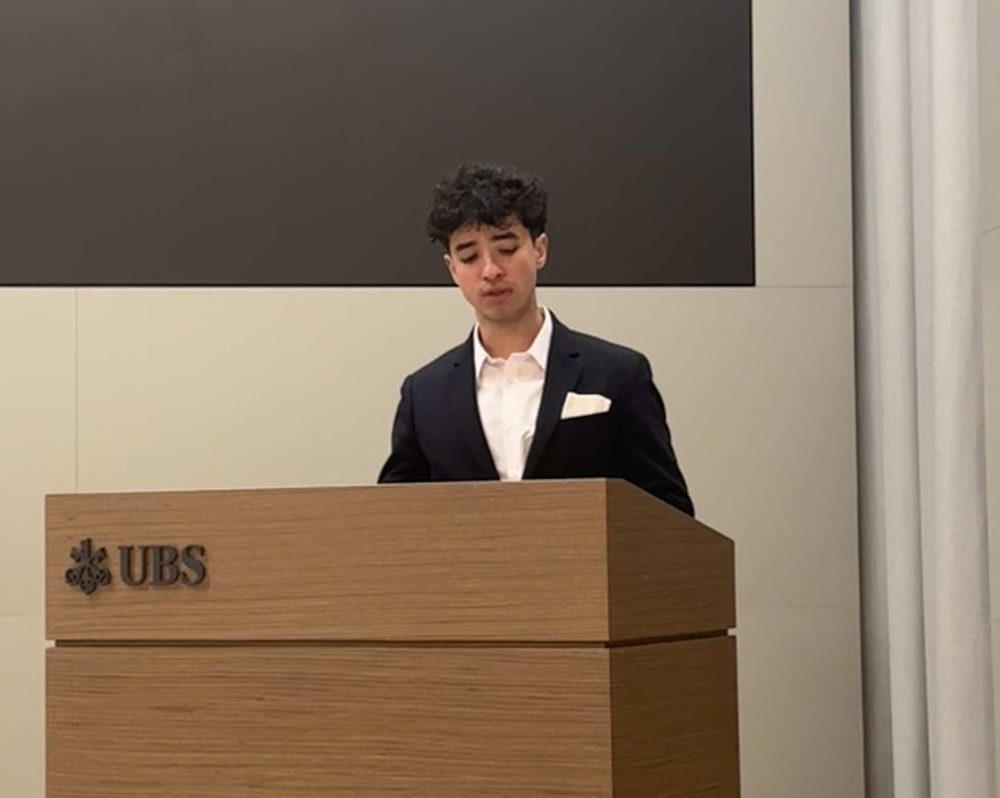

I’m a Master's student in Financial Engineering at EPFL, with a Bachelor of Science in Mathematics and a passion for research at the intersection of machine learning and finance.
I’m currently working as a Research Assistant on transformer-based models for time-series forecasting, supervised by Prof. Semyon Malamud and PhD candidate Johannes Schwab.
Previously, I completed a thesis on projection estimators and B-splines under the supervision of Prof. Victor Panaretos.
Outside of academics, I’ve played football for most of my life, and now train regularly with a strong interest in fitness. I also enjoy playing the piano — it helps me stay focused and relaxed.
